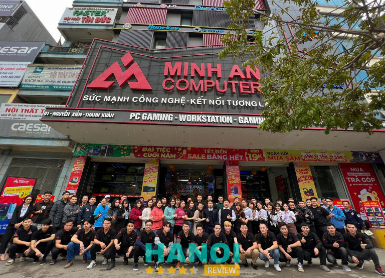
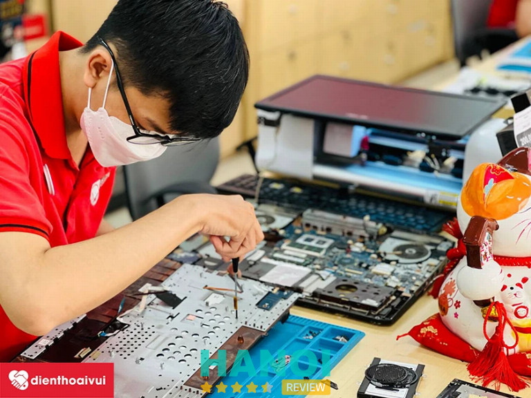

10 Địa chỉ sửa máy tính, laptop tại Hà Nội giá rẻ, đáng tin cậy
Việc tìm kiếm kiếm các địa chỉ sửa máy tính, laptop tại Hà Nội có giá dịch vụ bình dân và uy tín, không có tình trạng tráo đổi linh kiện hay thay thế đồ dỏm hiện là nhu cầu đang được rất nhiều người quan tâm.
Top 10 địa chỉ sửa máy tính, laptop tại Hà Nội uy tín
Những loại thiết bị điện tử, đặc biệt là máy tính khi dùng lâu chắc chắn sẽ gặp các bệnh trục trặc. Do đó, nhu cầu tìm kiếm những trung tâm có dịch vụ sửa chữa máy tính giỏi, giá thành phải chăng cũng dần tăng lên.
Chính vì vậy, trong bài viết này HaNoiReview sẽ giới thiệu đến bạn danh sách 10 địa chỉ sửa máy tính ngay tại thủ đô có chất lượng dịch vụ tốt nhất.
Trung tâm sửa chữa máy tính BK66
Được biết đến là một trong những đơn vị có chất lượng dịch vụ tốt, trung tâm sửa chữa máy tính BK66 luôn sẵn sàng hỗ trợ khách hàng ngay tại nhà trong bất cứ thời gian nào. Sau khi nhận được yêu cầu từ khách hàng, đơn vị sẽ sắp xếp nhân viên có trình độ chuyên môn giỏi, lành nghề cao và giàu kinh nghiệm đến nhà trong thời gian sớm nhất để hỗ trợ và phục vụ một cách chu đáo.
Tại trung tâm có nhận sửa chữa và khắc phục một vài sự cố từ cơ bản đến nghiệm trong cho máy tính (laptop) như không khởi động hoặc shutdown được, máy bị trẹo, chạy chậm,…. Ngoài ra, bạn còn có thể yêu cầu dịch vụ khác như sửa chữa sự cố liên quan đến đường truyền wifi, mạng internet, đổ mực in cho máy fax, photocopy,… dành cho các doanh nghiệp, công ty.
Những dịch vụ sửa chữa máy tính tiêu biểu tại trung tâm được đông đảo khách hàng tin chọn, bao gồm: khắc phục các lỗi cơ bản trên máy tính, cài win, diệt virus bằng các phần mềm chuyên dụng (Kaspersky, BKAV pro, Antivirus, CMC,…).
Bên cạnh đó, BK66 còn cung cấp các dòng linh kiện máy tính/laptop với mức giá vô cùng ưu đãi nhằm hỗ trợ khách hàng nâng cấp máy tính tốt nhất. Tất cả các sản phẩm thay thế đều cam kết là hàng chính hãng 100%, chi phí phải chăng, có chế độ bảo hàng rõ ràng, luôn đảm bảo quyền lợi tốt nhất dành cho quý khách khi sử dụng dịch vụ của đơn vị.
Thông tin liên hệ:
- Địa chỉ: 147 Khương Thượng, Quận Đống Đa, Hà Nội
- Điện thoại: 0977 547 123
- Website: suamaytinhtainha.vn
- Fanpage: FB.com/suamaytinhtainha.vn
Xem thêm: 10 Dịch vụ sửa điều hòa tại Hà Nội uy tín, đảm bảo chất lượng
Nhất Long
Mặc dù được thành lập cách đây không lâu, thể nhưng Nhất Long chính là một trong những đơn vị hàng đầu về lĩnh vực sửa chữa máy tính tại Hà Nội. Tính đến thời điểm hiện tại, trung tâm đã sửa chữa máy tính cho hàng nghìn khách hàng khác nhau, cũng như nhận được nhiều lời đánh giá tích cực về chất lượng dịch vụ và phong cách làm việc của nhân viên.
Khi lựa chọn dịch vụ của trung tâm, đội ngũ nhân viên làm việc tại đây sẽ nhanh chóng kiểm tra và phản cho bạn biết về tình trạng của máy. Sau đó, các nhân viên sẽ báo giá cụ thể về dịch vụ sửa chữa. Nếu khách đồng ý đơn vị mới tiến hành tháo máy và sửa chữa, đảm bảo không có tình trạng mập mờ hay ép giá.
Ngoài việc thông báo hiện trạng máy và giá cả đúng như ban đầu, đơn vị còn cam kết:
- Thời gian sửa laptop nhanh chóng, tối đa trong vòng 3 ngày.
- Giữ máy nguyên vẹn, không làm mất các dữ liệu khác trong máy.
- Không có bất kì phụ phí hay thêm phí dịch vụ sau khi đã báo giá.
- Hoàn tiền phí dịch vụ 100% nếu máy tính vẫn tiếp tục bị lỗi đã sửa quá 3 lần và không thể khắc phục.
- Cung cấp phiếu bảo hành và sửa chữa dài hạn để khách hàng an tâm sử dụng dịch vụ.
Với đội ngũ nhân viên có tinh thần trách nhiệm cao và làm việc tận tâm. Chỉ cần khách hàng có nhu cầu cần sự hỗ trợ và sửa chữa dù là offline hay online, đội ngũ nhân viên sẽ nhiệt tình hướng dẫn và giúp bạn. Đặc biệt, nơi đây còn là đơn vị uy tín có dịch vụ sửa chữa máy tính lấy liền chỉ trong một thời gian ngắn chờ đợi. Do đó, Nhất Long chính là trung tâm cung cấp dịch vụ sửa chữa máy tính không thể nào tốt hơn dành cho như ai đang có nhu cầu nâng cấp lại chiếc laptop của mình.
Thông tin liên hệ:
- Địa chỉ: 334 Thái Hà Quận Đống Đa, Hà Nội
- Điện thoại: 0963 093 456
- Email: congnghesonhatlong@gmail.com
- Website: laptopnhatlong.vn
Phong Vũ Computer
Phong Vũ Computer từ lâu đã không còn là cái tên xa lạ trong lĩnh vực kinh doanh và sửa sửa laptop tại Hà Nội. Đơn vị luôn được nhiều người nhờ đến đầu tiên vì nơi đây cung cấp các loại sản phẩm máy tính và dịch vụ sửa chữa với chất lượng tốt nhất khiến khách hàng hài lòng tuyệt đối.
Đơn vị cung cấp dịch vụ bảo hành và sửa chữa tận nơi dành cho quý khách hàng không có điều kiện và thời gian mang máy tính cần xử lý đến trực tiếp tại cửa hàng. Đội ngũ nhân viên của Phong Vũ sẽ đến địa chỉ mà khách hàng cung cấp để nhận máy và sửa. Trường hợp máy bị thiếu linh kiện hay cần sự can thiệp chuyên sâu và không thể xử lý tại chỗ thì nhân viên sẽ tiến hành niêm phong các linh kiện còn mới và không cần sửa rồi mang sản phẩm về trung tâm để tiến hành làm. Sau đó, đơn vị sẽ gửi trả máy về địa chỉ nhà/ công ty của khách hàng.
Hơn nữa, đơn vị sẵn sàng hỗ trợ kiểm tra miễn phí tình trạng máy. Nếu Laptop không cần sửa chữa thì khách hàng cũng không cần phải trả phí kiểm tra máy. Ngoài ra, đối với những ai đã từng mua máy tại trung tâm nhưng hết thời gian bảo hành, đơn vị sẽ cung cấp chương trình giảm 20% phí dịch vụ sửa chữa (chưa tính tiền linh kiện) nhằm tri ân khách hàng cũ.
Đặc biệt, mọi sản phẩm mà đơn vị dùng để thay thế đều là những linh kiện tương ứng của các hãng lớn và nổi tiếng như Samsung, HP, Acer, Asus, Linksys, Kingmax,… Do đó, khách hàng hoàn toàn có thể yên tâm và chất lượng, cam kết không dùng linh kiện cũ, kém chất lượng.
Thông tin liên hệ:
- Địa chỉ: Tầng 3, Số 62 Trần Đại Nghĩa, P. Đồng Tâm, Quận Hai Bà Trưng, Hà Nội
- Điện thoại: 1800 6865
- Website: phongvu.vn
Xem thêm: 5 Dịch vụ cho thuê PC, Laptop tại Hà Nội chất lượng, giá tốt
Gia Phát Computer
Gia Phát Computer là địa chỉ tiếp theo có dịch vụ sửa chữa máy tính uy tín ở Hà Nội mà bài viết muốn giới thiệu đến bạn. Cửa hàng quy tụ nhiều thợ giỏi, giàu kinh nghiệm và làm việc vô cùng chu đáo, tận tâm và có tinh thần trách nhiệm cao. Đảm bảo có thể khắc phục và sửa chữa laptop chỉ trong một khoảng thời gian ngắn dù là các vấn đề về phần cứng hay phần mềm.
Khi đến với Gia Phát Computer, máy tính của bạn sẽ được xác định đúng bệnh và nhân viên ở đây sẽ đưa ra những giải pháp phù hợp nhất, cam kết không cố tình quảng cáo hàng loạt dịch vụ để chặt chém khách hàng. Cửa hàng chuyên hỗ trợ sửa chữa một số loại tình trạng phổ biến như cài đặt win, sự cố không lên nguồn, màn hình, nhiễm virus và thậm chí là tình trạng hư hỏng nặng do dính nước,…
Ngoài ra, trường hợp cần phải thay thế linh kiện, khách hàng sẽ được trung tâm thông báo trước và chỉ tiến hành làm khi nhận được sự đồng ý của các cá nhân, công ty, doanh nghiệp,…. Các sản phẩm mà đơn vị dùng để thay đều là hàng chính hãng, chất lượng tốt và có nguồn gốc xuất xứ rõ ràng với mức chi phí phải chăng so với thị trường. Đây cũng chính là một điểm cộng lớn của Gia Phát Computer.
Một khi tin chọn dịch vụ sửa chữa máy tính ở Gia Phát, đơn vị cam kết sẽ mang đến cho khách hàng sự an toàn về chất lượng và nhanh chóng về mặt thời gian. Qua đó, không làm ảnh hưởng đến công việc bận rộn của khách hàng.
Thông tin liên hệ:
- Địa chỉ: 40B Lê Thanh Nghị, P. Bách Khoa, Quận Hai Bà Trưng, Hà Nội
- Điện thoại: 0965 959 599
- Website: suachuamaytinhhanoi.com
- Fanpage: FB.com/Trung-tâm-sửa-chữa-máy-tính-uy-tín-tại-Hà-Nội-59907336686522
Sửa chữa Laptop 24h
Sửa chữa Laptop 24h là một chuỗi hệ thống các cửa hàng chuyên sửa chữa máy tính, laptop và Macbook có chất lượng dịch vụ hàng đầu trên cả nước. Không chỉ có ở khu vực Hà Nội, đơn vị còn có hàng loạt các cơ sở ở Hồ Chí Minh, Thái Nguyên, Hải Phòng,… Sau nhiều năm nỗ lực xây dựng và phát triển, Sửa chữa Laptop 24h đã và đang mang lại những trải nghiệm dịch vụ tốt nhất dành cho quý khách hàng của mình.
Một số dịch vụ sửa chữa Laptop do đơn vị cung cấp, bao gồm:
- Dịch vụ sửa chữa máy tính PC, Macbook, Laptop lấy ngay
- Dịch vụ sửa chữa tại nhà hoặc cơ quan văn phòng
- Vệ sinh và bảo dưỡng, bảo trì máy tính cá nhân, doanh nghiệp theo định kỳ
- Thay thế linh kiện laptop như bàn phím, pin, màn hình, mainboard bằng những phụ tùng chính hãng
Với đội ngũ nhân viên kỹ thuật có trình độ nghiệp vụ chuyên môn cao kết hợp cùng quy trình làm việc rõ ràng, minh bạch hứa hẹn sẽ mang đến những dịch vụ có chất lượng tốt nhất cho khách hàng. Khi đến với trung tâm, máy tính của bạn sẽ được các kỹ thuật viên trực tiếp kiểm tra tình trạng và tư vấn, trao đổi mọi thắc mắc của bạn.
Đặc biệt, giá thành các dịch vụ sửa chữa cũng được đơn vị niêm yết công khai trên hệ thống website để khách hàng dễ dàng tham khảo. Đảm bảo khách hàng sẽ được hưởng mức giá dịch vụ rẻ nhất chưa từng có trên thị trường.
Bên cạnh đó, cửa hàng còn thường xuyên áp dụng nhiều chương trình ưu đãi siêu hấp dẫn cùng các phần quá có giá trị để tri ân khách hàng cá nhân vào doanh nghiệp. Không những thế, đơn vị còn cung cấp các chính sách vụ bảo hành và bảo trì uy tín khác để khách hàng có thể an tâm sửa dụng công nghệ.
Thông tin liên hệ:
- Địa chỉ: số 24 Nguyễn Xiển, Quận Thanh Xuân, Hà Nội
- Điện thoại: 0915 468 866
- Email; info@24hgroup.com.vn
- Website: suachualaptop24h.com
- Fanpage: FB.com/suachualaptop24h
Xem thêm: 10 Địa chỉ mua laptop cũ tại Hà Nội uy tín, giá tốt, có bảo hành
Trung tâm sửa chữa laptop máy tính VAGROUP
VAGROUP cũng là trung tâm chuyên sửa chữa máy tính, laptop có tiếng trên địa bàn Hà Thành. Nơi đây là cơ sở phân phối các linh kiện, phụ kiện máy tính cá nhân, doanh nghiệp uy tín hàng đầu trên cả nước. Với nhiều năm kinh nghiệm hoạt động trong lĩnh vực sửa chữa và phân phối linh kiện laptop, VAGROUP sẽ mang đến những dịch vụ tính chuyên nghiệp, hiệu quả nhất dành cho khách hàng.
Những lý do bạn nên chọn dịch vụ ở VAGROUP:
- Hệ thống cửa hàng trải dài khắp từ Bắc đến Nam
- Đội ngũ kỹ thuật viên có kinh nghiệm lâu năm cho lĩnh vực sửa chữa máy tính
- Dịch vụ sửa chữa nhanh chóng, có thể lấy ngay mà không cần phải chờ đợi lâu.
- Linh kiện thay thế đều là hàng chính hãng, chất lượng tốt
- Hỗ trợ tư vấn trực tuyến miễn phí
- Dịch vụ sửa chữa tận nơi nếu khách hàng yêu cầu
- Nhận được nhiều phản hồi từ các đối tác lớn như doanh nghiệp và khách hàng cá nhân
Do đó, hãy đến với VAGROUP để trực tiếp quan sát các nhân viên kỹ thuật có trình độ giỏi kiểm tra tình trạng thực tế của máy cũng như sửa chữa ngay tại chỗ. Đảm bảo không có bất kỳ sự gian dối nào hay tự ý tráo đổi phụ kiện của máy khách.
Thông tin liên hệ:
- Địa chỉ: số 44 Ng. 2, P. Thái Hà, Trung Liệt, Quận Đống Đa, Hà Nội
- Điện thoại; 0968 108 889
- Email: hung@vagroup.vn
- Website: vagroup.vn
Minh An Computer
Minh An Computer chính thức đi vào hoạt động từ năm 2014. Hiện tại, đơn vị đã trở thành một trong những doanh nghiệp kinh doanh lĩnh vực công nghệ, tin học, điện tử hàng đầu Việt Nam. Do đó, đơn vị được nhiều khách hàng biết đến là cơ sở cung cấp dịch vụ sửa chữa máy tính cũng như phân phối linh kiện laptop uy tín bậc nhất hiện nay.

Những loại hình dịch vụ nổi bật ở Minh An Computer, bao gồm:
- Sửa chữa, khắc phục các sự cố từ cơ bản đến nặng của máy tính, laptop
- Phân phối linh kiện điện tử thay thế của các dòng laptop, máy tính văn phòng, PC Gaming,…
- Tư vấn, thiết kế và thi công lắp đặt quán net trọn gói
- Thi công mạng nội bộ, wifi, internet,…
Minh An sở hữu nguồn nhân lực trẻ, trình độ chuyên môn, nhiệt huyết và tinh thần trách nhiệm cao đã phục vụ và khiến hàng trăm khách hàng hài lòng nhờ có dịch vụ làm việc chuyên nghiệp. Trong quá trình hoạt động, đơn vị từng làm đối tác cùng các hãng công nghệ nổi tiếng như: ASUS, LG, Intel, AMD, Samsung, Nvidia, MSI, Acer, Sama, Zotac, Antec, Gigabyte, Xigmatek, Adata, Apacer, Kingston, Corsair, AVEXIR, WD, Cooler Master, Dareu, Dahua, Seagate, Galax, Hikvision, PNY, Inno3D, Lightning, Tomato,… Đó cũng là minh chứng rõ ràng nhất về độ uy tín của Minh An Computer.
Thông tin liên hệ:
- Địa chỉ: 91 Nguyễn Xiển, Quận Thanh Xuân, Hà Nội
- Điện thoại: 1800 6321
- Email: mac@minhancomputer.com
- Website: minhancomputer.com
- Fanpage: FB.com/minhancomputerhn
Xem thêm: 5 Cửa hàng bán điện thoại tại Hà Nội được tin tưởng nhất
Bệnh Viện Máy Tính
Bệnh Viện Máy Tính đang được rất nhiều khách hàng ở Hà Nội tin tưởng và lựa chọn khi có nhu cầu cần sửa chữa laptop. Tính đến thời điểm hiện tại, đơn vị đã có hơn 10 năm kinh nghiệm trong nghề và đang dần tạo dựng được chỗ đứng vững chắc cho mình trên thị trường công nghệ khắc nghiệt.
Tại cửa hàng có cung cấp dịch vụ cài đặt win, khắc phục và thiết lập phần mềm diệt virus cùng các ứng dụng hỗ trợ văn phòng và thiết kế đồ họa như Auto Card, 3Dsmax, Photoshop,… Và ngoài ra còn có hỗ trợ sửa máy tính bị lag, đơ, chạy chậm hay bị lỗi màn hình xanh.
Bên cạnh đó, bạn cũng có thể đến trải nghiệm nhiều dịch vụ chất lượng khác. Chẳng hạn như máy tính không lên nguồn hoặc đang chạy thì bị ngắt liên tục, khôi phục nguồn dữ liệu đã bị mất do virus xâm nhập hoặc do format nhầm – ổ lỗi chết cơ và đồng thời khắc phục tình trạng không kết nối được với mạng,…
Trường hợp laptop không nhận các thiết bị ngoại vi và driver, cũng như cần nâng cấp và thay thế linh kiện chính hãng thì khách hàng hãy đến shop để được nhân viên tư vấn và hỗ trợ.
Giá thành dịch vụ phải chăng và chế độ hậu mãi tốt cùng nhiều chương trình ưu đãi hấp dẫn nhằm đảm bảo tối đa mọi quyền lợi cho khách hàng chính là những ưu điểm nổi bật của trung tâm. Thêm vào đó, đội ngũ nhân viên phục vụ vô cùng thân thiện, nhiệt tình, thân thiện và niềm nở. Trước khi tiến hành dịch vụ sửa chữa, đơn vị đều sẽ thông báo rõ ràng về các vấn đề mà máy tính đang gặp phải và báo giá cụ thể, chi tiết để khách hàng chuẩn bị và an tâm hơn.
Thông tin liên hệ:
- Địa chỉ: 8 Ngõ 426 Đường Láng, P. Láng Hạ, Quận Đống Đa, Hà Nội
- Điện thoại: 0981 044 288
- Website: benhvienmaytinhhanoi.com
Máy tính 247
Khi nhắc đến những trung tâm sửa chữa laptop uy tín và chuyên nghiệp nhất hiện nay ở khu vực Hà Nội thì không thể nào bỏ qua đơn vị Máy Tính 247. Khi lựa chọn dịch vụ của trung tâm, bạn sẽ được làm việc trực tiếp với các nhân viên kỹ thuật giàu kinh nghiệm chuyên môn và nhiệt tình, vui vẻ.
Với đội ngũ nhân lực tài năng, đơn vị có thể hỗ trợ khách hàng sửa chữa máy tính, cài Win, vệ sinh laptop, đổ mực và sửa máy in,… cùng nhiều loại hình dịch vụ khác.
Bên cạnh quy trình làm việc trực tiếp tại cửa hàng, đơn vị còn cung cấp dịch vụ sửa máy tính tại nhà, văn phòng công ty. Các kỹ thuật viên của trung tâm sẽ có mặt tại điểm hẹn một cách nhanh nhất theo yêu cầu của khách hàng, hỗ trợ kiểm tra tình trạng máy và báo lỗi, giá dịch vụ cho khách hàng.
Để đáp ứng dịch sửa chữa máy tính, laptop trở nên nhanh chóng và được hiệu quả hơn, đơn vị đã không ngừng đầu tư các trang thiết bị máy móc hiện đại nhất cùng đội ngũ chuyên viên kỹ thuật giỏi, đã qua lớp đào tạo bài bản, chuyên nghiệp. Do vậy, nếu laptop hay máy tính của bạn gặp sự cố, hãy an tâm và mang đến trung tâm để nhận được sự trợ giúp kịp thời với mức chi phí thấp nhất.
Thông tin liên hệ:
- Địa chỉ: 96 ngõ 338 Xã Đàn, Phương Liên, Quận Đống Đa, Hà Nội
- Điện thoại: 0918 618 866
- Email: htien88it@gmail.com
- Website: dichvumaytinh247.com
Xem thêm: 5 Địa chỉ bán cáp sạc Iphone tại Hà Nội chất lượng, giá tốt
Điện Thoại Vui
Với mong muốn trở thành trung tâm sửa chữa máy tính hàng đầu tại Việt Nam, Điện Thoại Vui đã không ngừng cố gắng cải thiện dịch vụ với chất lượng tốt, giá rẻ để mang đến những trải nghiệm tuyệt vời dành cho quý khách hàng. Đơn vị chuyên sửa chữa và nâng cấp máy về các lỗi thường gặp như: bàn phím, pin, màn hình, kết nối wifi, ram – ổ cứng SSD… Ngoài ra, còn có dịch vụ vệ sinh laptop lấy liền cùng nhiều dịch vụ khác.

Những quyền lợi bạn nhận được khi lựa chọn dịch vụ ở đây:
- Quy trình làm việc chuyên nghiệp
- Quá trình kiểm tra máy, tư vấn miễn phí. Nếu không sửa cũng không mất tiền.
- Đảm bảo tính minh bạch khi báo giá dịch vụ.
- Trường hợp sửa chữa cần nhiều giờ, khách hàng sẽ được tự ký tên lên linh kiện, chụp hình xác nhận.
- Sản phẩm linh kiện có nguồn gốc rõ ràng.
- Hoàn tiền 100% nếu khách hàng không hài lòng khi sử dụng dịch vụ sửa chữa máy tính tại cửa hàng.
- Hỗ trợ giao – nhận máy tại nhà nhằm giúp khách hàng tiết kiệm thời gian đi lại.
Với những ưu điểm trên, Điện Thoại Vui tự tin có thể khiến khách hàng hài lòng từ chất lượng sản phẩm đến dịch vụ chăm sóc khách hàng.
Thông tin liên hệ:
- Địa chỉ: 48 Trần Duy Hưng, Trung Hòa, Quận Cầu Giấy, Hà Nội
- Điện thoại: 0247 101 0357
- Website: dienthoaivui.com.vn
- Fanpage: FB.com/dienthoaivui.com.vn
Top 5 Kinh nghiệm chọn địa chỉ sửa máy tính chuyên nghiệp, uy tín
Sau một thời gian dài sử dụng, máy tính thường hay gặp các tình trạng bị lỗi, hư hỏng cần phải có đơn vị chuyên môn hỗ trợ sửa chữa kịp thời. Tuy nhiên, không phải trung tâm sửa máy tính, laptop nào cũng đảm bảo sự uy tín và dịch vụ chất lượng. Ngoài những đơn vị mà bài viết giới thiệu, để chọn được địa chỉ có dịch vụ tốt, quá trình sửa chữa hiệu quả, giá thành rẻ, bạn hãy tham khảo một vài kinh nghiệm sau:
- Đơn vị có kinh nghiệm lâu năm: Cơ sở sửa máy tính có kinh nghiệm làm việc lâu năm chắc chắn sẽ mang đến cho bạn quy trình dịch vụ nhanh chóng. Đồng thời, hãy ưu tiên lựa chọn cơ sở cung cấp thông tin rõ ràng từ địa chỉ đến số điện thoại, website để bạn có thể an tâm hơn khi sử dụng vụ.
- Kỹ thuật viên có trình độ giỏi: Bạn cần lựa chọn những cơ sở có đội ngũ nhân viên kỹ thuật giàu kinh nghiệm và có trình độ chuyên môn giỏi trong việc sửa chữa laptop để có thể tìm đúng bệnh và đưa ra phương pháp giải quyết tối ưu nhất. Thêm vào đó, phong cách làm việc chuyên nghiệp, thái độ niềm nở, nhiệt tình của nhân viên cũng sẽ khiến bạn có những trải nghiệm dịch vụ tuyệt vời hơn.
- Linh kiện thay thế chính hãng: Việc thay linh kiện cho một chiếc máy tính đang bị hỏng là điều không tránh khỏi. Tuy nhiên, để máy có thể hoạt động tốt, bền lâu thì buộc phải sử dụng linh kiện chính hãng, khớp với máy. Vì thế nên trước khi tiến hành thay linh kiện, bạn cần phải kiểm tra nguồn gốc của phụ kiện bằng cách trực tiếp yêu cầu đơn vị cho xem tem chính hãng.
- Chế độ bảo hành: Hiện này, có vô số trung tâm sử dụng linh kiện kém chất lượng. Điều này không chỉ làm cho trình trạng hoạt động của máy trở nên xấu đi mà nó còn khiến laptop thường xuyên bị hư hỏng và khiến bạn tốn nhiều thời gian và tiền bạc để sửa đi sửa lại. Do đó, bạn nên chọn những đơn vị cung cấp đầy đủ các chính sách bảo hành để đảm bảo quyền lợi cho mình.
- Chi phí dịch vụ: Nhằm tránh tình trạng bị vẽ phí dịch vụ và nâng giá phụ kiện nhưng chất lượng lại không tương xứng với giá tiền đã bỏ ra. Trước khi để đơn vị sửa chữa, tháo máy, bạn cần hỏi giá cụ thể.
Trên đây là danh sách 10 địa chỉ sửa máy tính, laptop tại Hà Nội được nhiều khách hàng đánh giá cao về chất lượng dịch vụ tốt và giá cả phải chăng mà bài viết đã tổng hợp và giới thiệu đến quý bạn đọc. Hy vọng những nội dung trên sẽ là nguồn thông tin hữu ích, đáp ứng được nhu cầu của bạn.
Có thể bạn quan tâm
- 5 Địa chỉ bán phụ tùng máy công trình tại Hà Nội uy tín hàng đầu
- 5 Địa chỉ độ đèn ô tô tại Hà Nội chất lượng, giá cả hợp lý
- 5 Địa chỉ bán tranh sơn dầu tại Hà Nội đẹp mắt, chất lượng
- 10 Công ty thiết kế biệt thự tại Hà Nội chuyên nghiệp hàng đầu
DOANH NGHIỆP: Đăng tải thông tin MIỄN PHÍ.
Tin đọc nhiều


10 Công ty thiết bị y tế ở Hà Nội giá tốt, chất lượng
Các công ty thiết bị y tế tại Hà Nội là địa chỉ quen thuộc của nhiều bệnh viện, phòng khám, gia đình,… vì sản...
5 Địa chỉ sửa Macbook ở Thanh Xuân chất lượng, uy tín, nhanh chóng
Tìm kiếm địa chỉ sửa Macbook ở Thanh Xuân chất lượng đang trở thành nhu cầu thiết yếu của nhiều người dùng công nghệ. Việc...
5 Địa chỉ sửa máy hút ẩm tại Hà Nội nhanh chóng, đáng tin cậy
Nếu chẳng may thiết bị công nghệ nhà bạn gặp vấn đề trục trặc và cần tìm kiếm địa chỉ sửa máy hút ẩm tại...

5 Địa chỉ sửa Macbook ở Hoàn Kiếm uy tín, lấy liền
Sửa Macbook ở Hoàn Kiếm đang trở thành nhu cầu thiết yếu với những người dùng công nghệ cao. Việc lựa chọn nơi sửa uy...

Trở thành người đầu tiên bình luận cho bài viết này!